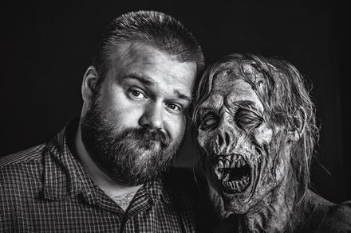

Skybound to finish "The Walking Dead"

13 hours agoby Angela Martin
Skybound Games revealed a couple of weeks ago that it would finish work on The Walking Dead: The Final Season, which had been left in limbo following the collapse of Telltale Games. It also committed to working with members of the Telltale development team on the project, a small bit of good news for at least some of its former employees.
In a recent AMA on Reddit, Skybound CEO Ian Howe went even further, saying that the goal is to build the entire TWD development team out of ex-Telltalers.

Robert Kirkman, owner and founder of Skybound Games
"The plan is for it to be staffed 100% by former Telltale staff, the only time we'd look elsewhere is if we can't fill a particular role from former TT people," Howe wrote. "I can't go into details but the team will be working directly for Skybound to complete game."
It won't be a wholesale transplant of the team from Telltale to Skybound, as Howe explained that "people roll on and off of projects" as their development progresses. "That means there are people who were on the team who were close to rolling off onto something else," he wrote. "It's unfair to ask someone to come back and do a couple of weeks work, especially if that would get in the way of another job offer, so this is just one example of some of the challenges we face."
The story itself will not be changed, however, and Clementine's story will conclude as it was meant to: "The process of developing the narrative isn’t changing, there is a long standing collaboration between the writers and Skybound over story approval and all the same people will still be involved."
There's no word as to when all of this will happen, as development hasn't actually resumed yet, and "until we're back into production, it's going to be nearly impossible to give an accurate [date]." But it may not be too much of a wait, as Howe said he expects Episode 3 to be out before the end of the year. "I'll be very disappointed if we can't make that happen," he said.
He also left the door open to DLC, or possibly even new Telltale-style games. "Our first priority it to complete the story, once we feel that we're in good shape to do that, we'll look at all the other possibilities and we love hearing the ideas and suggestions," he said.
"There [is] nothing in active development yet, but we're always talking about how we can tell interesting stories in games. I'm really spending a lot of time at the moment looking at new technologies and how that can allow us to deliver strong narrative based games."